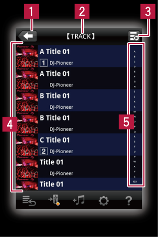

rekordbox面板
浏览器面板

 用于返回上一级。
用于返回上一级。
 在此处显示当前浏览的位置（级别）。
在此处显示当前浏览的位置（级别）。

 链接到DJ播放机时，将显示DJ播放机的播放状态。
链接到DJ播放机时，将显示DJ播放机的播放状态。
 在此处显示当前浏览位置（级别）的唱片集、 标题等的列表。 轻触一首曲目时，播放机面板将打开并开始播放。
在此处显示当前浏览位置（级别）的唱片集、 标题等的列表。 轻触一首曲目时，播放机面板将打开并开始播放。
在链接到DJ播放机，轻触一首曲目时，链接面板（CDJ/XDJ）或链接面板（XDJ）将打开。